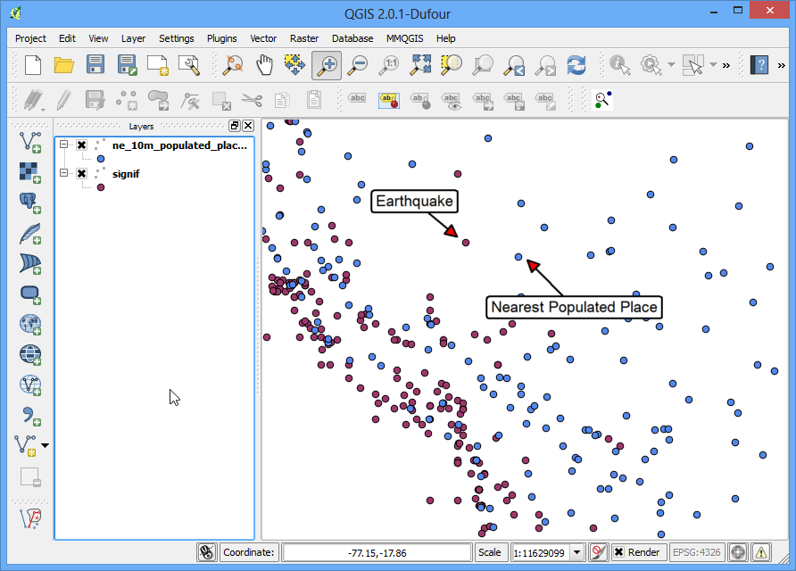
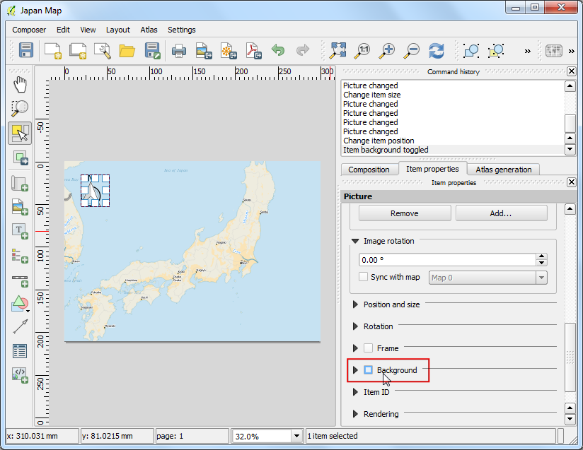

Interpolazione di dati puntuali
[ Download PDF
A4
Letter ]
L’interpolazione è una tecnica comunemente usata in ambito GIS per creare superfici continue a partire da dati discreti di tipo puntuale. Molti fenomeni del mondo reale sono continui: i livelli, i territori, le temperature etc. Se intendiamo definire queste superfici per trarne delle analisi, non possiamo prendere le misure lungo la loro intera superficie. Per questo motivo le misure sul campo vengono rilevate su vari punti lungo la superficie e quindi ne vengono inferiti i valori intermedi mediante un processo chiamato ‘interpolazione’. In QGIS l’interpolazione si effettua usando un plugin residente chiamato Interpolation plugin.
Descrizione dell’esercizio
Prenderemo le misure effettuate sul campo della profondità del lago di Arlington, nel Texas e quindi creeremo una mappa delle profondità e dei contorni a partire da queste misure.
Altri aspetti che avremo modo di apprendere nel corso dell’esercizio.
RIcavare delle curve di livello dai dati puntuali.
Mascherare valori no-data da un layer di tipo raster.
Aggiungere etichette a un layer di tipo vettoriale.
Procedimento
Aprite QGIS e andate su .

Individuate lo shapefile appena scaricato Shapefiles.zip e selezionatelo. Fate click su Apri.

Nella finestra di dialogo Seleziona layer da aggiungere... tenete premuto il tasto Shift e selezionate i layer Arlington_Soundings_2007_stpl83.shp e Boundary2004_550_stpl83.shp. Fate click su OK.

Vedrete due layer caricati in QGIS. Il layer Boundary2004_550_stpl83 layer rappresenta i confini del lago. Deselezionate la relativa casella nella TOC.

Questo rivelerà la composizione dei dati del secondo layer, quello che si chiama Arlington_Soundings_2007_stpl83. Sebbene a prima vista paiano delle linee, si tratta in realtà di una serie di punti molto ravvicinati.

Fate click sull’icona Ingrandisci e selezionate una piccola area sulla schermo. Via via che vi avvicinate iniziarete a veder comparire i punti. Ciascuno dei punti rappresenta l’esito di una rilevazione effettuata sul campo con una Sonda di profondità e quindi registrata attraverso un disposito DGPS .

Slezionate lo strumento Informazioni elementi e fate click su un punto. Vedrete comparire il pannello Informazioni sui risultati che mostra i valori assegnati al punto. In questo caso l’attributo ELEVATION` indica la profondità del lago in quel punto. Dal momento che ci siamo proposti di creare un mappa della profondità e un disegno delle curve di livello, useremo questi punteggi come degli input per l’interpolazione.

Assicuratevi di avere il plugin Interpolation plugin attivo. Qualora fosse necessario, andatevi a vedere Usare i Plugins per attivarlo. Una volta attivato, andate su .

Nella finestra di dialogo Plugin di Interpolazione selezionate, sotto a guilabel:Input, il file Arlington_Soundings_2007_stpl83 alla voce Vettore. Selezionate quindi ELEVATION` come :guilabel:`attributo di interpolazione`. Fate quindi click su :guilabel:`Aggiungi` nel pannello sottostante. Modificate poi i valori di :guilabel:`Dimensione cella X` e :guilabel:` Dimensione cella Y` portandoli a ``5. Questo valore è la misura di ciascun pixel nella griglia di output. Considerato che la nostra fonte di dati è stata misurata in un sistema di riferimento (SR) proiettato avente i piedi americani (Feet-US) come unità di misura, basandoci sulla nostra selezione la misura della griglia sarà di 5 piedi. Ora fate click sul pulsante ... poi su file di output e chiamate il file con il nome di elevation_tin.tif. Fate click su OK.
Nota
I risultati dell’interpolazione variano significativamente sulla base del motodo e dei parametri che voi scegliete. QGIS supporta due metodi di interpolazione chiamati Triagulated Irregular Network (TIN) e Inverse Distance Weighting (IDW). Il metodo TIN è usato comunemente per i dati di elevazione mentre IDW viene usato per dati di interpolazione di altro genere, per esempio le concentrazioni di minerale, la popolazione e così via. Vedetevi il modulo relativo alla the Spatial Analysis nella documentazione ufficiale di QGIS per ulteriori dettagli.

Vedrete il nuovo layer elevation_tin caricato in QGIS. Fate click sul layer e scegliete Zoom all’estensione del layer.

State vedendo l’estensione completa della superficie. Ma l’interpolazione non dà risultati accurati al di fuori dell’area di raccolta dei dati. Andiamo allora a clippare la superficie ottenuta con il layer dei confini del lago. Andate su .

Date al file di output il nome elevation_tin_clipped.tif. Selezionate come Modo di clip la casella strato per la maschera. Quindi selezionate sotto Boundary2004_550_stpl83 come strato per la maschera`. Click su OK.

Un nuovo raster elevation_tin_clipped sarà caricato in QGIS. Ora potremo finalmente tematizzare questo layer per mostrare i diversi livelli di altezza. Osservate i livelli minimi e massimi del layer elevation_tin. Fate click con il tasto destro sul layer elevation_tin_clipped e selezionate Proprietà.

Andate sulla scheda Stile . Selezionate Falso colore banda singola``e come :guilabel:`tipo di visualizzazione. In Genera nuova mappa di colore selezionate Spectral dalla scala dei colori. Dal momento che vogliamo creare una mappa di profondità opposta a una mappa di altezza, barrate la casella Inverti . Questo ci permetterà di assegnare il blu alle zone profonde e il rosso a quelle superficiali. Fate click su Classifica.

Adesso passate sulla scheda Tranparenza . Vogliamo togliere i pixel neri dal nostro output. Inserite 0 in valori nulli aggiuntivi. Fate click su OK.

Adesso avete una mappa dei rilievi di elevazione del lago ricavata dal rilevamento delle singole profondità. A questo punto andremo a creare le curve di livello. Andiamo su .

Nella finestra di dialogo curve di livello inserite contours come File di output per le curve di livello. Andremo a generare delle curve di livello con intervalli di 5 piedi, perciò inseriamo 5.00 alla voce Intervallo fra curve di livello. Barrate la casella nome attributo . Fate click su OK.

Le curve di livello saranno caricate come layer contours quando il processo sarà terminato. Fate click con il tasto destro su layer e selezionate Proprietà.

Andate sulla scheda etichette. Sbarrate la casella etichetta questo vettore con ... e selezionate ELEV come campo . Selezionate intorno al punto come Posizionamento e fate click su OK.

Vedrete che ciascuna curva di livello sarà opportunamente etichettata con la relativa altezza lungo la linea.